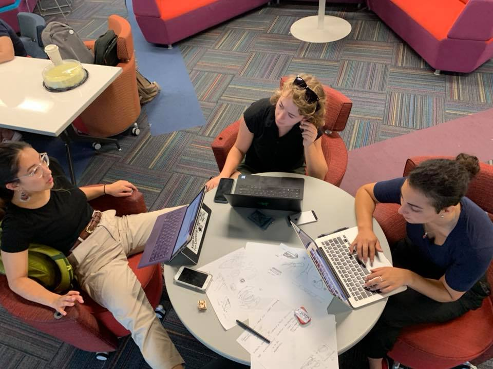
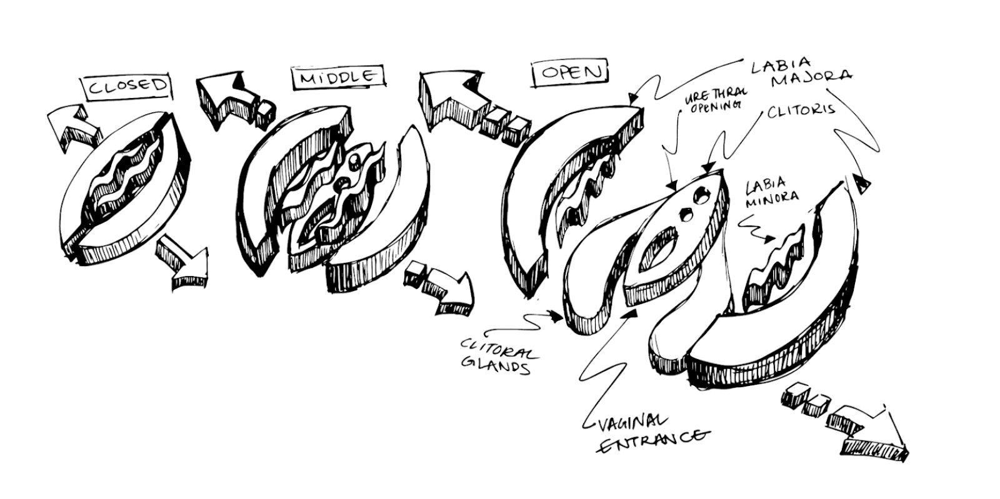

Introduction
In the spring of 2019, Franchesca Spektor, Hailey Windsor, and I were approached by Laura Millar, a sex educator for blind and visually impaired (BVI) folks, to create sex-education tooling for BVI learners. With funding from “Making Together: Crossing Borders + Connecting Communities”, a CITRIS Invention Lab Program, we were able to realize the first iterations of this product. We collaborated with researcher and professor Cristina G. Reynaga-Peña from the School of Humanities and Education at Tecnológico de Monterrey. Later. She connected us with BVI experts and resources both in the United States and Mexico to aid in our development. We later received an Innovation Catalysts Student Grant from the Jacobs Institute for Design Innovation to continue our research. This work is still being continued, but has shifted away from academic research, moving instead toward a Community-based Participatory Research approach.

Franchesca Spektor, Hailey Windsor, and I working on this project at Tecnológico de Monterrey. Image courtesy of Chris Myers.
Initial Research
We began by doing online and publication-based research on what learning tools looked like for sex education and for BVI students. We found that existing tools for BVI students have huge cost barriers. Additionally, we found that online resources for learning, like the Vulva Academy Learning Site, used primarily visual modes of teaching. The “Jim Jackson” models are currently the best and most realistic anatomical teaching tools on the market are exorbitantly expensive at $500-600, and are not explicitly suited for BVI individuals. “The Great Wall of Vagina,” a sculpture piece created by artist Jamie McCartney after casting 400 women’s vaginas shoe the remarkable diversity of human bodies, something lacking in traditional sex educaiton. But this is an artistic work that hasn’t been adapted for education. We also looked at existing biological education toolkits targeted for BVI people, such as the “Touch, Label, and Learn Poster: Human Skeleton” created by The American Printing House for the Blind. These models and tools, at $100+ are also out of many educator’s reach.
(from left to right) Jim Jackson models, “The Great Wall of Vagina,” and a learning tool from The American Printing House for the Blind.
Problem Framing
From this initial research, we formulated these project goal: Create cheap, modular, sex-positive models for, female anatomy, male anatomy, intersex / non-binary anatomy that can aid in inclusive sex education of BVI people and sighted people. We also created these questions: What level of fidelity & dimensionality is best for BVI people? How much anatomy should we reveal? What is this project contributing to a larger sex education context? How do we make this model work in a variety of settings with unknown resources?

1st Stage Prototypes
In our initial prototypes, we focused on designing a vaginal model. Prototyping with clay and cardboard, we created puzzle pieces of the female reproductive system. On top of this base, we added structures representing the opening of the vaginal canal, urethra, and clitoris. By putting the puzzle pieces together, we hoped students would gain a better grasp not only of the structures, but how the system functions as a whole. By having interchangeable pieces, we also envisioned creating multiple labia and clitoris shapes, as inspired by the Great Wall of Vagina. After bringing this prototype to Maker Faire and gathering feedback, however, we learned that: it was difficult to understand a model that required assembly. Using clay or other moldable materials was not easily reproducible in settings with variable resources. It was quite challenging to build a dimensional model that had clear initial educational value without the need for supervision + explanation.


2nd Stage Prototypes
This led us to pursue a new model, an “exploded view” of the female reproductive system. We hope this new approach would retain the modularity of the previous idea, while showcasing every structure individually for more accessible learning.
User Feedback
After creating an exploded view of the model, a user-testing session was organized by Laura Millar with a few BVI folks from around the Bay Area. After an evening of discussing the model, we came out of the session with a few insights. First, the interaction with the model prompted many folks at the session to share stories about their sexual and reproductive histories. A common sentiment they expressed was that they found the sex education they had recieved throughout their life - either from school, friends or family - to be inadequate. Additionally, we found that any model made must be made more robust than the prototype we brought. Given that the mode of use is primarily tactile, it needs to be physically durable Additionally, it was expressed that texture and contrast are as important as shape. For low-vision users, high contrast pieces can help to distinguish certain parts from each other.
Future of the Model
The following are future goals we have for this project. We will provide the option of making each structural component a button (cost allowing) that can be pressed for audio information. Additionally, The structures will include braille overlays. We want to create vacuum-formed molds that allow educators in variable settings to use the materials they have on hand to build dimension on top of our provided laser cut base -- from putty to paper-mache to silicone. We plan to include molds for creating interchangeable external structures (e.g. labia and clitoris) to emphasize the natural variation in genitalia. These can be designed to showcase the development of the vagina over the course of puberty, or perhaps simply acquaint students with the breadth of human diversity. Finally, we hope to take our learnings and goals for this prototype on female anatomy, and expand these principles to include male and intersex / non-binary anatomy. Additionally, we'd like to make these files available for free on a user-friendly site so makers, wherever they are, can begin to make Gena.
The Current Project
The focus of the project has shifted away from academic research, moving instead toward a Community-based Participatory Research approach, wherein the goals and methods of the project are established by BVI community leaders. When working with focus groups to develop the didactic function of the model, we found that there much work to be done in developing a trusting relationship between the BVI community and the research community before going forward with the model’s development. Using sex-education as a framework, the project’s community leaders have decided to focus on researching consent and disability justice when approaching BVI & other disability communities.